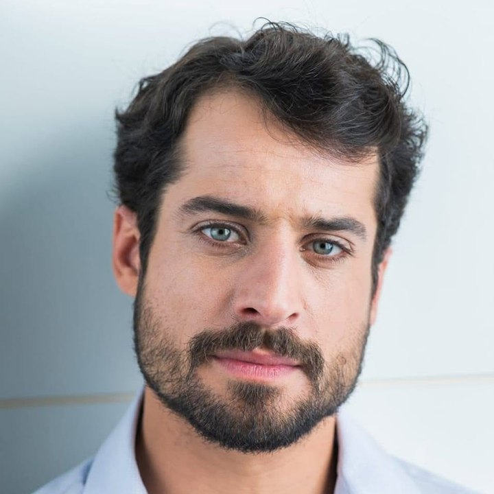

Chair and President, Legal seat
Diogo Busse
Diogo Busse is a Brazilian attorney, legal scholar, and cultural producer with extensive experience in regulatory law, public policy, civil rights, and the legal development of innovative initiatives addressing complex social challenges.
He holds a Master's degree in Social Relations Law from the Federal University of Paraná (UFPR) and a Legal Law Master (LL.M.) qualification from Ibmec. Throughout his career, he has worked at the intersection of law, science, public health, and social transformation, contributing to pioneering legal initiatives and regulatory discussions in Brazil.
His professional experience includes legal advocacy, institutional governance, nonprofit development, and the advancement of regulatory frameworks for emerging technologies and innovative approaches to health and well-being.
As Legal Director and a member of the Board of Directors of Foundations of Life, Diogo contributes legal and strategic guidance to support the organization's governance, institutional integrity, and international development.
He believes that law should serve as an instrument for protecting life, promoting social justice, and enabling meaningful transformation. His commitment to Foundations of Life reflects a broader conviction that environmental restoration, human dignity, and collective well-being are deeply interconnected.